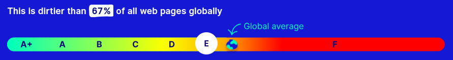
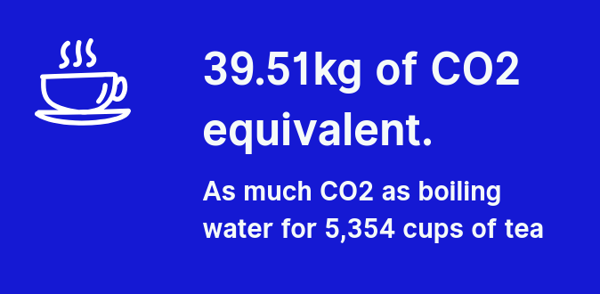
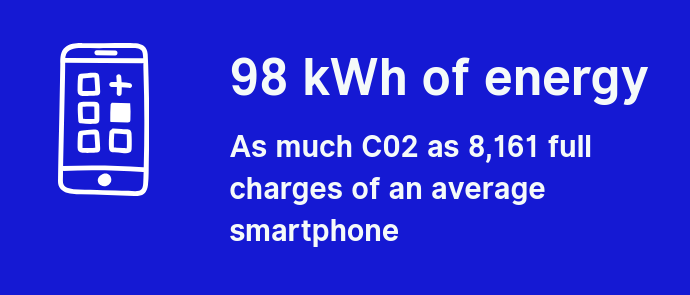
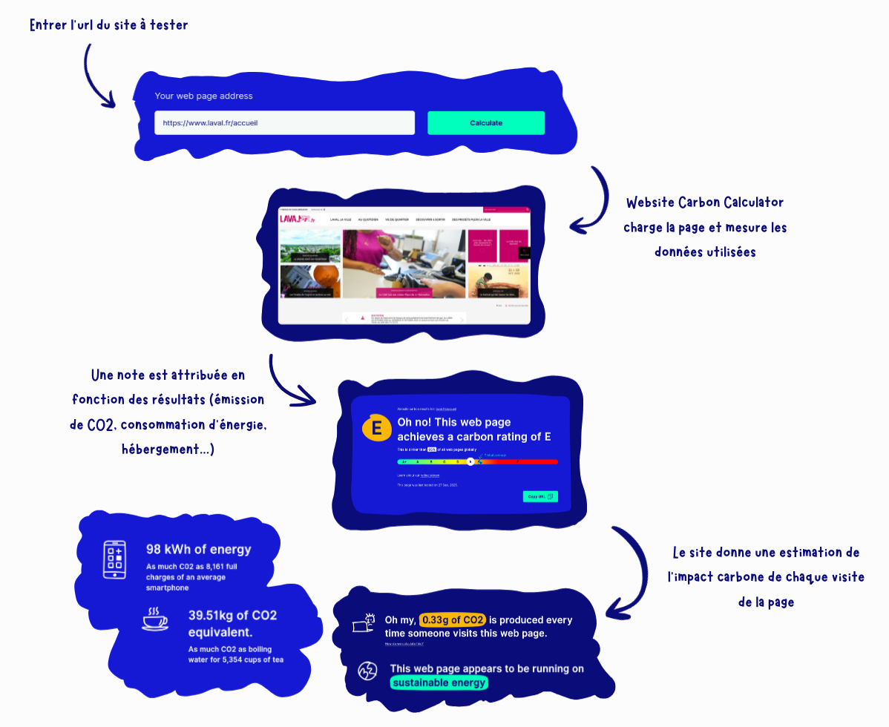

Décryptage technique et pédagogique de Website Carbon Calculator
Website Carbon Calculator est ou outil développé par Wholegrain Digital, une agence web anglaise engagée
dans la conception web durable.
Il permet de mesurer la quantité de CO2 produite à chaque visite d'une page web. Il peut être utilisé
par les propriétaires des sites, les développeurs
pour estimer leur impact carbone ou encore par des personnes souhaitant avoir une idée de l'impact de
leur activité en ligne. C'est un outil essentiel de mesurer
l’impact (même de façon approximative) pour pouvoir le réduire et être en mesure d'obsérver une
amélioration.
Website Carbon Calculator utilise l'url de la page pour ensuite la charger, mesurer les ressources
nécessaires pour le chargement et le transfert de données.
Il mesure la quantité d'énergie utilisée et vérifie si cette énergie est "verte" via le Green Web
Foundation Directory.
Pour calculer l'empreinte carbone, le site utilise le SWDM (Sustainable Web Design Model). Ce modèle
estime la consommation d'énergie d'une certaine quantité de
données, puis les émissions de CO2 basées sur cette consommation d'énergie.
Cela est calculé pour la partie hébergement, réseau et transfert de données puis réception côté client.
Le modèle SWDM s'appuie sur des études sur l'énergie du réseau et les transmissions de données et sur le
Green Web Foundation Directory.
En se basant sur toutes ces données, le site donne une estimation de l'empreinte carbone de chaque
visite de la page en g de CO2 et une note
entre A+ et F.
Il donne aussi des équivalents de ce résultat et des ressources permettant de rendre son site plus vert.
Site testé : https://www.laval.fr/accueil
On entre l'url du site dont on veut estimer l'empreinte carbone :
On obtient une note entre A+ et F (ici E). Plus la note se rapproche de A+ plus le site est "vert" et
produit peu de CO2.
On a aussi une comparaison avec toutes les notes des autres sites. Notre site a une note moins bonne que 67%
des sites examinés.

On peut avor une approximation du CO2 (en g) produit à chaque visite de la page :
Grâce au Green Web Foundation Directory, on peut savoir si l'hébergement du site consomme beaucoup d'énergie
:
Pour finir, quelques comparaisons pédagogiques permettent de donner une idée concrète de l'impact de chaque
visite de ce site :



Website Carbon Calculator est un outil intéressant, cependant il possède certaines limites. Tout d'abord,
c'est un modèle estimatif, il ne réalise pas de mesures,
seulement des calculs et des estimations. Il est principalement basé sur le poids de la page et peut manquer
des ressources externes, des calculs tardifs ou côté serveur.
Il ne prend pas en compte l'impact de la fabrication du matériel, l'énergie consommée en veille ou les
intéractions sur le site.
Par conséquent, cet outil peut être utilisé à des fins pédagogiques pour sensibiliser, comparer, mais pas
pour des analyses précises ou comme référence fiable.
Application du RGESN : audit et amélioration d’un service numérique